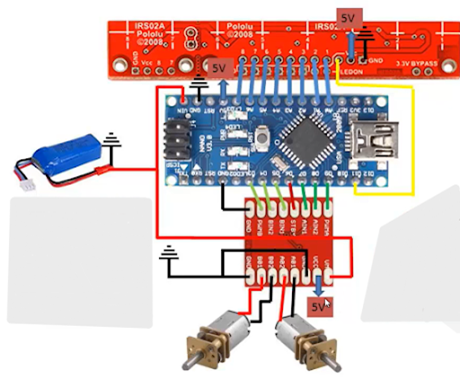

Realiza las conexiones como indica el esquema y monta todo sobre un chasis ligero (como de baquelita).
El código usa sensores QTR y un algoritmo PID para seguir la línea.
Recuerda calibrar el pid dependiendo del peso largo y ancho de las ruedas y del chasis esto de hace con matematicas sobre pid.